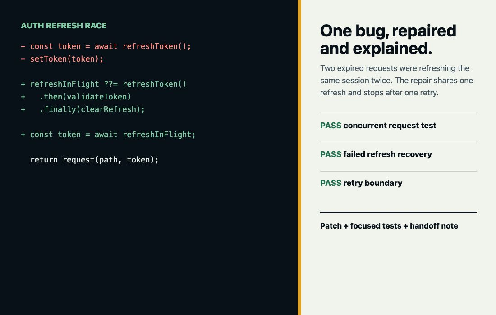

Diagnosis
Reproduction steps and a plain-language root-cause explanation.
React, TypeScript, JavaScript, or Python
I rescue one broken part of a small AI-built app, reproduce the failure, repair the root cause, add a focused test, and explain what changed.
$75 starter rescue for one reproducible issue.

Starter Scope
The issue must be reproducible before payment. If it is larger than the starter scope, I will say so before work begins.
Reproduction steps and a plain-language root-cause explanation.
One scoped code fix delivered as a patch or pull request.
One focused automated check that protects the repaired behavior.
A short note covering the change, validation, and remaining risks.
Sample Repair
Two simultaneous unauthorized requests started two refresh calls, creating unreliable sessions and repeat sign-outs.
A shared in-flight refresh, explicit token validation, and a one-retry boundary. Three regression tests cover concurrency and failure recovery.
Process
Share the stack, expected behavior, actual behavior, and reproduction steps.
I reproduce the issue and confirm that it fits the starter scope before payment.
I implement the scoped fix and add a focused regression test.
You receive the patch, test command, explanation, and remaining-risk note.
Good Fit
Boundaries
Remove passwords, API keys, customer records, and copied production databases. Full rewrites, emergency production access, and high-risk payment or regulated systems need a separate review.
Start
I will confirm whether the issue fits the $75 starter rescue before asking for payment.